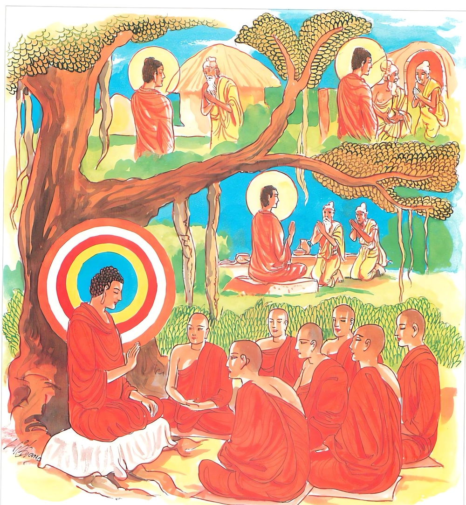

17-5 සාකේතක බ්රාහ්මණයා පිළිබඳ කථා පුවත
මෙම කතාව සද්ධර්ම සාගරයෙන් ද කියවන්න.
අහිංසකා යෙ මුනයො නිච්චං කායෙනසංවුතා
තෙ යන්ති අච්චුතං ඨානං යත්ථ ගන්ත්වා න සොචරෙ.
යම් මුනි කෙනෙක් අනුනට හිංසාවක් නො කෙරෙද්ද, සතතයෙන් කයින් සංවෘත වූවෝ ද, ඒ අශෛක්ෂි මුනිහු, සත්ත්වයෝ යම් තැනකට ගොස් ශෝක නො කෙරෙද්ද, මරණයක් නැති ඒ අමා මහ නිවන් නැමැති තැනට (අරමුණු කිරීම් වශයෙන්) පැමිණෙන්නාහ.

"අහිංසකායෙති” යන මේ ධර්ම දේශනය ශාස්තෲන් වහන්සේ සාකේත නගරය ඇසුරු කොට අඳුන් වනයේ වැඩසිටියදී භික්ෂූන් විසින් විමසු ප්රශ්න නිමිති කර ගෙන දේශනා කළහ.
බුදුරජාණන් වහන්සේ භික්ෂූන් පිරිවරා සාකේත නුවර පිඩුපිණිස පිවිසෙන කල සාකේත වාසී එක් බ්රාහ්මණ මහල්ලෙක් නගරයෙන් නික්ම යන්නේ ඇතුල් ගෙය දොරටුවේ දී දසබලයන් වහන්සේ දැක, දණින් වැටී කෙණ්ඩාවලින් දැඩි සේ අල්ලාගෙන දරුව පුතුන් විසින් දෙමාපියන් දිරා ගියවිට පිළිලැගුම් කළයුතු නොවේද? කුමක් හෙයින් මෙපමණ කලක් අපවෙත නො ආවේ ද මවිසින් ඔබ දක්නලදී, මව දැකීමට එන්න බුදුන් ගේ අතින් අල්ලාගෙන තමන්ගේ ගෙට ගියේය. බුදුහු එහි ගොස් පනවන ලද අසුනේ වාඩිවූහ. භික්ෂූන් වහන්සේලා ද වාඩිවුහ. බැමිණිය ද පැමිණ බුදුන් ළඟ දණින් වැටී දරුව මෙපමණ කලක් කොහි ගියේද? මහලු වියට පත් දෙමාපියන්ට දරුවෝ උවටැන් කළයුතු නොවේද පවසා දූ දරුවනි එන්න සොහොයුරාට වඳින්න. ඔවුන් දෙදෙනාම තුටු පහටුව බුදුන් ප්රමුඛ සංඝයා වැඳ ස්වාමීනි මෙහිම නිබඳව භික්ෂාව ගනු මැනවයි කියා සිටි විට බුදුවරුනම් එක තැනක නිතර වාසය කරන්නෝ නො වෙති. එක තැනක භික්ෂාව ගන්නෝද නො වෙතියි පැවසුවිට එසේ නම් ස්වාමීනි. යම් කෙනෙක් ආරාධනයට පැමිණෙන්නේද ඔහු අප සමීපයට එවන්නැයි කීවාහුය. බුදුහු එතැන් පටන් අරාධනා කිරීමට පැමිණි විට බ්රාහ්මණයන්ට දැනුම් දෙන්නැයි එවීය. ඔවුන් ගොස් අපි හෙට බුදුන්ට ආරාධනා කරන්නෙමු යයි බමුණාට කියති. බමුණා දෙවන දිනයේදී තමන්ගේ ගෙදරින් බත් භාජන ව්යංජන භාජන රැගෙන බුදුන් සිටින තැනට යයි.
අන් අයගේ ආරාධනයක් නොමැතිවිට බුදුහු බ්රාහ්මණයාගේ නිවසට වැඩම කරති. ඔවුන් දෙදෙනාම නිතර දියයුතු ද බුදුන්ට දෙමින් බණ අසමින් අනාගාමී ඵලයට පත් වූහ. භික්ෂූන් ද ධර්ම සභාවේ කථාවක් ඉපදවුහ. ඇවැත්නි. බුදුරජාණන් වහන්සේගේ දෙමාපියෝ සුද්ධෝදන හා මහාමායා දේවී බව දැනගෙනම මෙසේ දැනගෙනම බ්රාහ්මණයා හා බැමිණිය තමන් ගේ පුතුයයි බුදුන්ට පවසති. බුදුන් ද එය ඉවසාසිටී. කුමක් නිසා මෙසේ කියත්ද? මේ කථාව ඇසු බුදුරජාණන් වහන්සේ මෙසේ වදාළහ මහණෙනි දෙදෙනාම තමන්ගේ පුතුට පුතායයි කියතියි අතීත කථාව ගෙනහැර දැක්වීය. මහණෙනි මේ බ්රාහ්මණයා අතීතයේදී පන්සියයක් ජාතිවල මගේ පියා විය. පන්සියයක් ජාති සුළු පියා විය. ජාති පන්සියයක් මහ පියා විය. මවද එසේම ඔහුගේ භාර්යාව වෙමින් ජාති පන්සියයක් මව වුවාය. ජාති පන්සියයක් සුළු මව වුවාය. ජාති පන්සියයක් මහ මව වුවාය. මෙසේ එක්දහස් පන්සියයක් (1500) බමුණාගේ හා බැමිණියගේ අත මම වැඩුනෙමි. මෙසේ ඔවුන්ගේ පුත්ර භාවය දක්වා මේ ගාථාව පැවසුහ.
බුදුහු තෙමසක්ම එම කුලය නිසාම වැඩවාසය කළහ. ඒ දෙදෙනාම අර්හත්වයට පත්ව පිරිනිවන් පෑවාහුය. අනතුරුව ඔවුන්ට මහත් සත්කාර කොට දෙදෙනාම එකම කුළු ගෙයකට නංවා බැහැර කළහ. බුදුහු ද පන්සියයක් භික්ෂූන් පිරිවර කොටගෙන ඔවුන් සමගම ආදාහන කළ තැනට වැඩම කළහ. බොහෝ ජනයාද බුදුගේ මවුපියෝ යයි පැමිණියහ. බුදුහු ආදාහනය කරන ස්ථානයේ අසල එක් ශාලාවක වැඩසිටියහ. මිනිස්සු බුදුන් වැඳ එකත් පසෙක සිට ස්වාමීනි ! ඔබ වහන්ගේ දෙමාපියෝ කළුරිය කළහයි නොසිතන සේක්වා, ආදිය කියමින් බුදුන් සමගම පිළිසඳර කරති. බුදුහුත් එසේ නොකියන්නැයි ප්රතික්ෂේප නොකොට පිරිස අතර අදහස් බලා එම අවස්ථාවට උචිත ධර්මයක් දේශනා කරමින් ජීවිතය ඒකාන්තයෙන් අල්පය. කලල අවස්ථාවේ ද මියයති. ඉන් එහා වර්ෂ සියයකින් වුවද මියයයි යමෙක් සියවස් ඉක්මවා ජීවවේද ඔහු ජරාවට පත්වම මිය යයි.
මේ ජරාව පිළිබඳ සුත්රය දේශනා කළහ. දෙසුම අවසන අසූහාරදහසක් ධර්මාවබෝධය කළහ. භික්ෂූන් වහන්සේලා බ්රාහ්මණයා හා බැමිණිය පිරිනිවන් පෑ බව නොදැක ස්වාමීනි ඔවුන්ට කවර ලෙස පරලොව වීදැයි විමසුහ. බුදුහු මහණෙනි මෙබඳු අශෛක්ෂ මුණිවරුන්ට පරලොවක් නැත.
මෙබඳු අය අච්චුතවූ අමෘත මහා නිවණට පැමිණෙතියි පවසා මේ ගාථාව දේශනා කළහ.
තුන් දොරින් සංවර
අහිංසක වු මහණ බමුණෝ
සෝක නැති තිර වු
නිවන් මගටම පැමිණෙති
"අහිංසකා යෙ මුනයො නිච්චං - අහිංසකවු ඒ මුනිවරු නිතර කයින් සංවරවී අවරණය ස්ථානය වූ නිවනට ගොස් ශෝක නොකරති. එහි මුනයො යනු මොනෙය්ය ප්රතිපදා වෙන් මාර්ග ඵලයට පත් අශෛක්ෂ මුනිවරු. කායෙන යනු දේශනා මාත්රය පමණි. තිදොරින් සංවරවු යන අර්ථයයි. අච්චුත- නම් ශාස්වත ඨානං - යනු අකෝප්ය වූ ස්ථාවර වූ ස්ථානය නිවන - යත්ථා යයි තැනකට ගොස් ශෝක නොකරති. නොනැසේ එතැනට යයි යන අරුතයි. දේශනය අවසානයේ බොහෝ දෙනා සෝතාපත්ති ඵල ආදීයට පැමුණුනාහ.